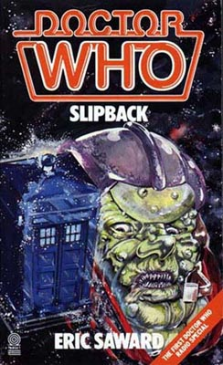

|
Slipback
|
BASIC PLOT DOCTOR COMPANIONS MATERIALISATION CIRCUIT Pg 58 In deep space, alongside the Vipod Mor. Pg 64 On board the Vipod Mor, in the ducting, typically. Pg 142 The Doctor tries to materialize the TARDIS in the Vipod Mor's computer database, but fails. He then leaves on Pg 143. Pg 144 It's a throwaway line, but the Doctor arrives at the largest library he can find. PREPARATORY READING CONTINUITY REFERENCES Pg 20 "He then stowed away on board a space freighter destined for Praxis 30." The Praxis range of gases was mentioned in The Caves of Androzani as the reason for the Doctor's celery. It's not clear whether there's a connection. Pg 26 Another speelsnape mention. Pg 27 The speelsnape is now described in all its beauty: "Speelsnapes were not pleasant creatures. Weighing approximately fifty-five kilos, it is a little bigger than a large dog. But there the similarity ends. With the speed of a cheetah, the temperament of a psychopathic crocodile on a bad day, it lives only for two things: to eat, and to reproduce." A speelsnape has "teeth as sharp as scalpels and jaw muscles exercising the power of hydraulic jacks [and] it is able to chew, rip and tear its way through the body of any living thing." Furthermore "it is a very beautiful animal, with the grace and agility of a cat." There, can you picture one now? Pg 41 "Whatever the colour of their skin - be it mauve, purple, blue, or - of course - green - it was always completely hairless." The 'of course' here appears to be a reference to the assumption that monsters were supposed to be green, as has been emphasized in the past by such noted luminaries as Terrance Dicks. Pg 45 Spandau Sickness is possibly a reference to the band Spandau Ballet. Pg 51 "As a rule, Time Lords require far more less sleep than most humanoid life forms, usually managing to survive quite happily on three hours a day." This is broadly consistent with other information we have. "Now, it must be stressed that the Doctor is very moderate when it comes to alcohol, partaking of the occasional glass only at Christmas." The Daleks' Master Plan, episode 7. The Doctor is stated as being 900 years old, again, (while an approximation here, and updated to 900 plus later in the novel) broadly consistent with what we know. Pg 52 "As Peri had never been to a Voxnic bar before..." Voxnic is mentioned as an alcoholic drink in a number of the Virgin and BBC books, but this is the tome in which it first appeared. "Nearby, and equally content with life, were half a dozen Terileptils." We met Terileptils in The Visitation, Saward's first script for Who, on the strength of which he was offered the script editor's job. Pg 54 "His name was Danstop and he was a life support maintenance engineer aboard a freighter which shipped tinclavic ore from the Terileptil mines on Raaga." Tinclavic and the mines on Raaga were also mentioned in The Visitation, as well as The Awakening. Pg 60 "Peri understood little about the Laws of Time, but knew that when they were interfered with all sorts of unpleasant effects occurred concerning the established history of the past and future. It wasn't without reason that the Time Lords of Gallifrey had outlawed such experiments." It's possible that Peri is aware of said outlawing as a result of her experiences in The Two Doctors. Pg 67 "The Doctor took a deep breath and told of how, while walking in a forest of Veegal Minor, Rudolph Musk has been swallowed whole by a splay-footed sceeg, a ferocious animal with a mouth the size of a horse-box." If the Doctor is not being facetious, his meeting with Rudolph, or any trips he may have made to Veegal Minor, are unrecorded adventures. "Perhaps being eaten wouldn't be so bad after all, she [Peri] thought. At least she would never have to listen to any more of the Doctor's bad stories." In keeping with the relationship between the Doctor and his companion at the time (post-Season 22), they clearly hate each other. This is actually acknowledged in the text later, but does beg the question why Peri hasn't demanded to leave at the first available opportunity. Pg 90 "The Doctor had been a prisoner before: many, many times before. If he were lucky enough to survive his current predicament, he would probably be taken prisoner again. But never before in his nine hundred plus years had he been such a complete prisoner." Nine hundred plus years, again, fits with what we know. And, as for being such a complete prisoner, just wait till Seeing I. Pg 91 Tingiconcarner is apparently the highest range of mountains in the Universe. It's not clear whether the Doctor has ever been there. Pg 96 Yet another mention of the beautiful creature that is the Speelsnape. Pg 97 "On Sedgemoor Ten he had once seen a droid, half the size of the one before him, lift a hundred and fifty tonnes." An unrecorded adventure. Pg 99 "He had once met a droid on Haitus Eighty-Four who had claimed to be eight thousand years old." Another unrecorded adventure. Pg 101 "Some androids were too well built, he thought. Their faith, commitment and understanding was far greater than their mere programming and he wondered how long it would be before they made an evolutionary leap to become a species in their own right." This is, to all intents and purposes, the plot of The Also People. Pg 110 "Such a simple question should be so easy to answer, but not where the Doctor was concerned, as, in common with most Time Lords, he had a name which was unpronounceable to the untutored tongue." This is true (or at least, the Doctor has claimed such), but actually quite ludicrous, given that 90 percent of the Time Lords we've met have, actually, have names that are clearly utterly pronouncable (even if it was Romanadvoratrelundar), so I think the Doctor's talking nonsense, frankly. He's probably really called Fred Farquharson and is just really embarrassed about it. Pg 114 "Slowly Seedle reclimbed the stairs, again counting each step. And as before there were thirteen - his lucky number." It's probably accidental that Seedle's lucky number coincides with the number of lives a Time Lord has. Pg 115 "Although she [Peri] had been through a great deal of physical punishment since she had known the Doctor..." Entirely true when you consider the events of Season 22, which again begs the question why is she still travelling with him? Pg 120 "But the Doctor wasn't bothered about the few secrets he had." By Remembrance of the Daleks and Silver Nemesis, he appears to have gained a lot more secrets, thus adding credence to the suggestion that he didn't recall any of these until his sixth regeneration. Pg 125 Probably the worst moment of characterization of Peri ever is: "Teeth grinding meant 'beat the suspect but leave him conscious.' - which Snatch proceeded to do. Although terrified, Peri watched the proceedings with a certain academic interest, never having seen a man beaten in such a professional manner." At a time when the Doctor seems uncommonly cruel and unlikable, this makes Peri almost the same. I can certainly say that if I saw someone being brutally beaten, my reaction would not be one of 'academic interest'. Pg 142 "'You are mistaken, Doctor,' the voice boomed. 'Like you, I am a renegade Time Lord.' 'Oh, really? There seems to be an awful lot of us around nowadays.'" You said it! The Doctor is presumably thinking of the recent events of The Mark of the Rani, but since that time there have been oodles more. OLD FRIENDS AND OLD ENEMIES NEW FRIENDS AND NEW ENEMIES Second Lieutenant Shellingbourne Grant (whose real name is Carlyle Dinton) is the only other survivor (other than the Doctor and Peri) of the main cast. It's never made clear what happens to him at the end; one moment he's on the TARDIS, the next he's gone. Presumably the Doctor dropped this thief, fraudster and accessory to murder off with a pat on the head, whilst muttering something about having misjudged him. Oliver Sneed, a brain surgeon, may well have survived, but the Doctor neither met him nor even heard his name mentioned. He probably briefly caught a glimpse of him. A Terileptil called Danstop. THE RANTS Pg 11 "When Horace's book was finally published, it was viciously attacked by the critics. This was sad, as no one had been able to disprove anything he had written. It was even sadder that the critics, blinded by their own prejudice, could not see the energy, grace and skill that had gone into the book's construction. Even if, as they believed, every word was untrue, they chose to ignore the incredible flights of imagination necessary to argue such a theory. But worse still - as they were supposedly people of education and letters - they could not see or appreciate the pure, good writing that was on the page." This sounds to me like a rant about people criticizing the previous series of Doctor Who (at this point, Season 22) and its subsequent, 'rest' period that had been the result. Apparently, Horace died two years later of a broken heart. Which is interesting, because Saward resigned a little short of two years later. Pg 13 What could be Eric's favourite drink, do we think? "It is interesting to note that when the joy of wine was discovered on Earth, massive, wonderfully creative civilizations followed - Egypt, Greece, Rome. When these empires crumbled, and wine became a scarce commodity, civilization sank into the Dark Ages. It wasn't until wine once more became plentiful that surges of energy known as the Renaissance occurred. Fortunately, during one of these periods of creativity, the off-licence was invented, and since then the people of Earth have never looked back." Pgs 18-19 "Of course, there is no virtue in being poor. Anyone who has tried to secure a small loan from a bank, without collateral, is only too aware of how managers of such establishments view those sorts of requests. To be able to borrow money requires that you have some, in one form or another, which somehow seems to make the loans side of banking rather redundant." Pg 22 "Now, it should be understood that psychiatrists and their camp followers are very touchy when it comes to having their methods criticized. Why this should be a complaint common to all psychs is yet another great mystery. Paranoia is the most common psychiatric condition known, yet it is most prevalent in the profession committed to understanding and eradicating it." This is the beginning of a rant which lasts for just over two pages about psychiatrists and psychoanalysts. Pg 42 "How he was nominated for his captaincy is interesting only in as much as it is a good example of how being in the right place at the right time, then bending events to your advantage, can bring about the elevation of an incompetent." Maybe I'm being extremely harsh here, but the description of Slarn is as a vicious, nasty, vindictive, overweight, demanding and selfish person, prone to temper tantrums and a childish determination to have his own way, as well as someone who started, in essence, as a tea-boy and worked his way up through the entertainments section of the spaceship workplace, and has now been promoted beyond the level of his own incompetence. In this, and in the antagonism which we know had arisen by this point between Saward and his closest work colleague, leads me to suspect that Slarn is a not-particularly-flattering analogue of one John Nathan-Turner. Pg 104 "'Just keep your hands where I can see them,' he urged, 'otherwise you'll be joining him.' The Doctor raised his hands and Grant started to search him. It wasn't so much the indignity of having the contents of his pockets examined which offended the Doctor, but the dreadful hackneyed cliche Grant had just uttered. A noble machine, a triumph of engineering had been destroyed, and all its assassin could do was grace the occasion with a line lifted from the most threadbare of literature." Saward has a point, obviously, but see also Pg 132, where the Doctor says "And neither will you get away with your despicable plan!" and think of pots and kettles. Pg 109 "Seedle grinned, exposing his disgusting teeth. 'Collusion is a state of mind, Miss, not a physical presence.'" The very personalities and approach of the two policeman is a rant in and of itself. One is left, then, with a picture of Saward as a man who feels that his genius for both plot and dialogue is under-appreciated, but most of his work is written under the influence of alcohol. Someone who has never been able to earn enough money even to qualify for a small bank loan. Someone who has seen far too many psychiatrists and psychoanalysts, and hates them, not to mention policemen, who are also hated. Someone who bitterly objects to criticism and is hugely resentful of those he feels are above him in the chain of command but shouldn't be. Not exactly a pretty picture.
CONTINUITY COCK-UPS PLUGGING THE HOLES [Fan-wank theorizing of how to fix continuity cock-ups] FEATURED ALIEN RACES A three-headed Vospodian. Strangely, the sense of this throwaway reference (on Pg 52) is that not all Vospodians are three-headed. It may well be that Vospodians can have any number of heads. A group of Ninson Warriors Some Terileptils who, we learn, venerate poets and circus clowns. Droogniks, with purple-crested, constantly nodding heads. A Maston, from Sentimenous Virgo, in the galaxy Delta Marvel, and, with the exception of the one that appears here, wiped out half a million years ago. Not a nice piece of work. If nothing else, when they become excited, they emit a smell not unlike that of rotting flesh. When they mate, the odour kills any other creature within a hundred metres. I don't know about you, but, for me, that was rather too much information. The computer has a bunch of semi-sentient robotic drones working for it. Voltroxes are mentioned on occasion, but never seen. Peri is briefly mistaken for both an Algolian and a Migarian midget. FEATURED LOCATIONS Also Lucan's Place, a Voxnic bar on Zaurak Minor ('considered by some to be the seediest planet in the galaxy'.) The largest library that the Doctor can find, possibly Carsus (see Spiral Scratch). IN SUMMARY - Anthony Wilson |
|
 |